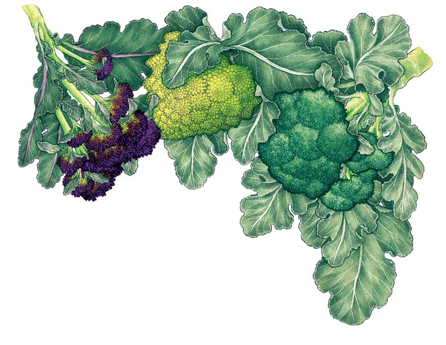
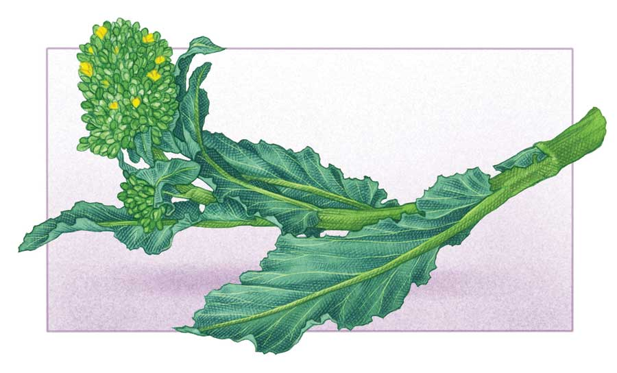

As the most popular member of the cabbage family, broccoli is always in high demand at the table. This cool-weather crop is best grown in spring or fall, and tastes sweetest when it matures in autumn, when nights turn chilly. Broccoli seeds sprout best when soil temperatures range between 60 and 70 degrees Fahrenheit.
Large-headed varieties produce the familiar domed heads that are composed of numerous clustered florets. Many large-headed varieties produce smaller side shoots after the primary head is harvested.
Sprouting varieties grow into bushier plants that produce numerous small heads. These varieties are at their best when grown from fall to spring in mild winter climates.
Romanesco varieties produce elegantly swirled heads composed of symmetrically pointed spirals. These large plants need plenty of space, excellent soil and good growing conditions to do well.
Broccoli raab is grown for its immature flower buds, which have a stronger flavor than regular broccoli. Broccoli raab (closely related to turnips) is popular in Asian and Italian cooking.
Check out our chart of broccoli types, which includes descriptions and growing tips for each.
For a summer harvest, start seeds indoors six weeks before your last spring frost, and set out hardened-off seedlings when they’re about four weeks old. You can also seed broccoli directly into a nursery bed and transplant the seedlings to your garden. Direct-sow broccoli raab starting three weeks before your last frost.
For a fall harvest, start seeds indoors 12 to 14 weeks before your first fall frost, and set the seedlings out when they’re four to six weeks old. Direct-sow broccoli raab starting eight weeks before your first fall frost. (To find your last spring or first fall frost dates, see Garden Planning: It’s All About When.)
Broccoli is a heavy feeder, and plants take up nutrients best when the soil pH is between 6.0 and 7.0. Choose a sunny site with fertile, well-drained soil. Loosen the planting bed and mix in up to 1 inch of mature compost. Unless your soil is very fertile, also mix in a high-nitrogen organic fertilizer such as alfalfa meal or composted poultry manure. Water the bed thoroughly before setting out seedlings. Allow 18 to 20 inches between plants. Dwarf varieties can be planted 12 inches apart.
Harvest broccoli heads when the florets around the edges of the head begin to show slight loosening, but when the beads in most of the crown are still tight.
Cut the stems at an angle - this will keep water from pooling inside the cut stem and causing rot. Refrigerate the cut heads immediately. To get top home-preserved quality, steam-blanch broccoli before freezing it. Continue to water the plants after harvest, as most varieties will produce secondary heads.
Watch broccoli raab closely, and harvest just as the first flowers show their yellow petals. Sprouting broccoli and broccoli raab are also cut-and-come-again crops that produce a second flush of buds after the first ones have been harvested.
When plants are spaced 18 inches apart, average yields are about 1 pound of broccoli per foot of row. Three to four plants per person is sufficient for fresh summer eating, but you should triple that number if you want a freezer crop for winter.
Most broccoli varieties must be exposed to winter chilling before they will flower heavily, but plants die if exposed to single-digit temperatures. Because of this, most seed is produced in mild winter areas.
Isolate plants to keep broccoli from crossing with cabbage, kale and other close cabbage cousins. Broccoli raab will cross with turnips.
Harvest seeds when the slender pods dry to tan and the seeds inside are dark brown or black. Select the largest, most perfect seeds for planting.
Broccoli seeds will keep for five years when stored in cool, dry, dark conditions. Test seeds that are more than three years old before relying on them for a main crop - just put a few in a wet paper towel for five days to confirm they will sprout.
Experiment with planting dates, which vary widely by climate. Striving for very early crops can backfire, as seedlings exposed to cold often “button,” meaning they produce tiny heads. Start by trying spring and fall planting dates recommended by your neighbors or your local extension service.
Grow several varieties to extend your harvest and to help buffer your crop from stressful weather. Varieties react differently to wet, dry, hot or cold periods.
If you have less-than-ideal soil, give plants extra nitrogen just as small heads begin to form. You can drench them with an organic mix-with-water fertilizer, mulch with well-rotted manure, or scratch a dusting of any high-nitrogen organic fertilizer into the soil around the plants.
Weed often and mulch deeply to get the highest yields from your broccoli. Two inches of grass clippings or any other biodegradable mulch will keep the soil cool, the way broccoli likes it.
Broccoli is a nutritional superfood that will strengthen your immune system, help maintain strong bones, and help protect you from cancer and heart disease. Broccoli is delicious raw, or you can steam florets for a minute and then plunge them into ice water before serving as finger food. Eat the stems by peeling away chewy outer skin, slicing them, and then cooking them along with the florets. Garden-fresh broccoli is tender, so be careful not to overcook it.
|
 KEITH WARD Tasty in each of its many varieties, broccoli is easier to grow than its relatives cauliflower and Brussels sprouts, and can produce bountiful crops for even novice gardeners. |
 KEITH WARD Broccoli is a nutritional superfood that will strengthen your immune system, help maintain strong bones, and help protect you from cancer and heart disease. |
|